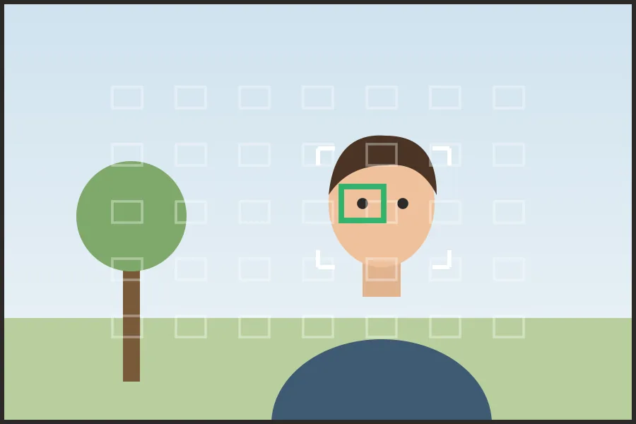
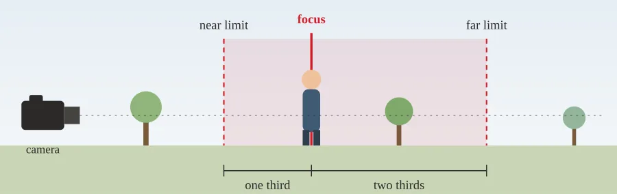

A photo can survive a slightly wrong exposure. It rarely survives the wrong thing being in focus. Modern autofocus is fast and clever, but it still needs you to tell it what matters. This chapter explains the main settings and when to use them.
Single and continuous autofocus
Most cameras offer two main autofocus modes. In single autofocus, often labelled AF-S, the camera focuses once when you half press the shutter and then locks. It’s the right choice for still subjects like landscapes and posed portraits.
In continuous autofocus, often labelled AF-C, the camera keeps adjusting focus for as long as you hold the button down. Use it for anything that moves, from children and pets to sport and birds. Many cameras also have an automatic mode that switches between the two. It’s handy, but less predictable.
Focus points and areas

You also choose where in the frame the camera looks for focus. A single point gives you exact control, and you move it onto the subject’s eye or whatever spot matters. Zone and wide-area modes let the camera choose within a larger area, which works well for a moving subject against a plain background. Many recent cameras can also recognise eyes, faces, animals and vehicles and follow them around the frame.
Focus and recompose is the older way of working. You put the centre point on the subject, half press, then move the camera to frame the picture. It works well at small apertures. At very wide apertures and close distances, though, that small movement can shift the plane of focus enough to soften the eyes. Moving the focus point is safer then.
Back-button focus
Many photographers separate focusing from taking the picture. They set a button on the back of the camera to start autofocus and leave the shutter button to fire the shutter. In continuous mode, holding the back button tracks the subject. Letting go locks focus, so you can recompose freely without the camera refocusing. It takes about a week to get used to, and then most people never go back.
Manual focus
Some scenes confuse autofocus. Very low light and low-contrast subjects, like fog or a plain wall, are hard for it. So is a subject behind something closer, like a bird behind branches. Switch to manual focus there. Most cameras help with magnification, which enlarges part of the view, and with focus peaking, which outlines sharp edges in colour.
Where to focus
In portraits, focus on the eye nearest the camera. With a group, focus on someone in the middle row and use a smaller aperture so the front and back rows stay sharp. In landscapes, focus about a third of the way into the scene, as chapter 8 explains.

The hyperfocal distance is the closest point you can focus on while the far distance still looks acceptably sharp. Focus there and everything from half that distance to the horizon looks sharp. Apps and tables give the exact figure for your lens and aperture, but the one-third rule gets you most of the way.
Sharpness isn’t only focus
A soft picture isn’t always a focus problem. Camera shake blurs everything a little in one direction, while subject movement blurs only the subject. A dirty lens or a cheap filter lowers contrast. Zoom in on your photo and look for the sharpest spot. If nothing is sharp, suspect shake. If something in front of or behind the subject is sharp, the focus missed.
Exercises
Exercises A1–A4. Tick each one off when you’ve tried it. Your ticks stay on this phone or computer.
- A1
Single and continuous
Photograph a friend walking towards you, first in single autofocus and then in continuous. Count how many shots are sharp in each set.
- A2
Point on the eye
Take a portrait at your widest aperture with the focus point on the nearest eye. Repeat with the point on the nose and compare.
- A3
Manual focus at night
Focus by hand on a distant street light using magnification. Check the result at 100% and try again until it’s crisp.
- A4
What went soft?
Go through your recent soft photos and work out for each one what made it soft. Keep a note of the most common cause.
Photography Handbook, © 2026 Samskara Photo Club. Text and illustrations are licensed under CC BY-NC-SA 4.0. You may share and adapt them for non-commercial use if you credit the club and share your version under the same licence. Commercial use needs the club’s permission. The club logo is not covered by the licence.